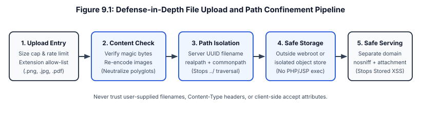

Chapter 9: File Upload, Path Traversal, and Server-Side File Handling
Learning Objectives
By the end of this chapter, you should be able to:
- Explain path traversal (MITRE CWE-22) and why naive string replacements like stripping
../fail. - Enforce server-side path canonicalization and base-directory confinement.
- Analyze unrestricted file upload risks (stored XSS via SVG/HTML, web shell execution, polyglots, and Denial of Service).
- Design a defense-in-depth file upload pipeline using allow-lists, content inspection, random filenames, and isolated storage.
9.1 Path Traversal (Directory Traversal)
Path traversal occurs when an application uses untrusted input to construct a filesystem path without confining the resolved path inside an intended base directory.
Consider a download endpoint:
# VULNERABLE: Direct path join without canonicalization check
file_path = os.path.join("/var/app/uploads", request.args.get("file"))
return send_file(file_path)An attacker requests ?file=../../../../etc/passwd (or URL-encoded %2e%2e%2f). Stripping ../ once is not enough—a naive filter turns ....// into ../ after one pass.
Proper Fix: Canonicalize and Verify Prefix
Resolve the canonical absolute path (os.path.realpath() in Python, path.resolve() in Node.js) and verify that it stays inside the canonical base directory (checking with a trailing path separator or os.path.commonpath):
# SECURE: Canonicalize both paths and verify containment
base_dir = os.path.realpath("/var/app/uploads")
target_path = os.path.realpath(os.path.join(base_dir, user_filename))
if os.path.commonpath([base_dir, target_path]) != base_dir or target_path == base_dir:
abort(403)Even better: avoid passing user-supplied filenames to the filesystem at all. Map an opaque database ID (file_id=104) to the stored file path on the server.
Real-World Case Study: PAN-OS GlobalProtect Path Traversal (CVE-2024-3400)
In April 2024, a critical zero-day vulnerability (CVE-2024-3400, CVSS 10.0) in Palo Alto Networks PAN-OS GlobalProtect demonstrated how path traversal in an unexpected HTTP header or cookie can escalate to full system compromise (Picus Analysis, Rapid7 / Cybersecurity Dive). When parsing the SESSID cookie, the service failed to validate that the value was a UUID, allowing unauthenticated POST requests with ../ sequences to create arbitrary files in telemetry directories whose filenames were subsequently passed to shell commands (UPSTYLE backdoor deployment). Path traversal is not limited to ?file= download parameters—every cookie, header, and archive entry extracted by server code must be validated and canonicalized.
9.2 File Upload Risks
File uploads cross multiple trust boundaries at once: filename parsing, content parsing, disk storage, and later serving back to browsers.
| Failure Mode | Mechanism | Impact |
|---|---|---|
| Executable upload | Uploading .php, .jsp, or .aspx into a web-accessible directory | Remote Code Execution (RCE) on the server |
| Active browser content | Uploading .html or .svg (which can contain <script>) served inline on the main origin | Stored XSS against any user who opens the file |
| Filename injection | Filenames containing ../, null bytes, or OS shell metacharacters | Overwriting configuration files (.htaccess, web.config) or command execution |
| Resource exhaustion | Unbounded file sizes or decompression bombs (zip bombs) | Disk or memory Denial of Service |
Why Client-Side and Content-Type Checks Fail
- Client-side
<input accept=".png">: Easily bypassed by intercepting thePOSTrequest. Content-Typeheader (image/jpeg): Controlled entirely by the sender in the multipart request.- Magic-byte inspection alone: Useful, but polyglot files can begin with valid GIF/JPEG magic bytes (
GIF89a) while still containing valid PHP or HTML/JS payloads later in the file.
9.3 Defense-in-Depth Upload Pipeline

As illustrated in Figure 9.1, a resilient upload pipeline validates size and extension at entry, inspects magic bytes and re-encodes images to strip polyglot payloads, isolates the resolved path with server-generated UUID filenames, stores files outside the executable webroot, and serves downloads from a separate domain with nosniff and Content-Disposition: attachment.
Following the OWASP File Upload Cheat Sheet, secure upload handling requires layered controls:
- Strict Extension Allow-List: Permit only required extensions (e.g.,
.png,.jpg,.pdf), checking the final extension after normalization. - Generate Server-Side Random Filenames: Never save uploaded files under the user's original filename. Store the original name as metadata if needed, and write the file using a random UUID.
- Inspect and Re-encode Content: Verify magic bytes and, for images, re-encode/strip metadata through an image library (e.g., Pillow or Sharp) to neutralize embedded payloads.
- Enforce Size and Rate Limits: Reject oversized payloads at the reverse proxy and application layers.
- Isolate Storage and Serving: Store uploads outside the webroot or in dedicated object storage (e.g., S3) served from a separate domain (
usercontent.example.net) withContent-Disposition: attachmentandX-Content-Type-Options: nosniffso browsers never execute uploaded files as HTML or scripts.
Key Takeaways
- Never pass user-supplied filenames directly to filesystem APIs; canonicalize paths with
realpathand verify containment. - Defense-in-depth upload pipelines validate extensions, inspect magic bytes, re-encode images, and assign random UUID filenames.
- Store uploads outside executable webroots and serve them from an isolated domain with
nosniffandContent-Disposition: attachment.
Applied Exercise
Trace why a single-pass filename.replace("../", "") filter fails against ....//etc/passwd and write the canonicalized path-containment check that blocks it.
Review Questions
- Why does stripping the substring
../once fail to prevent path traversal? - Why can an uploaded
.svgimage trigger Stored XSS even when the server blocks.phpand.jsfiles? - What is a polyglot file, and how does re-encoding uploaded images help neutralize it?
- Why should user-uploaded files be served from a separate domain or with
Content-Disposition: attachmentandX-Content-Type-Options: nosniff?
References
- OWASP Cheat Sheet Series: File Upload — https://cheatsheetseries.owasp.org/cheatsheets/File_Upload_Cheat_Sheet.html
- OWASP Top 10:2021 — A01:2021 Broken Access Control (CWE-22 Path Traversal) — https://top10.owasp.org/2021/A01_2021-Broken_Access_Control/
- OWASP WSTG v4.2: Testing File Extensions & Path Traversal — https://wstg.owasp.org/v4.2/4-Web_Application_Security_Testing/05-Authorization_Testing/01-Testing_Directory_Traversal_File_Include